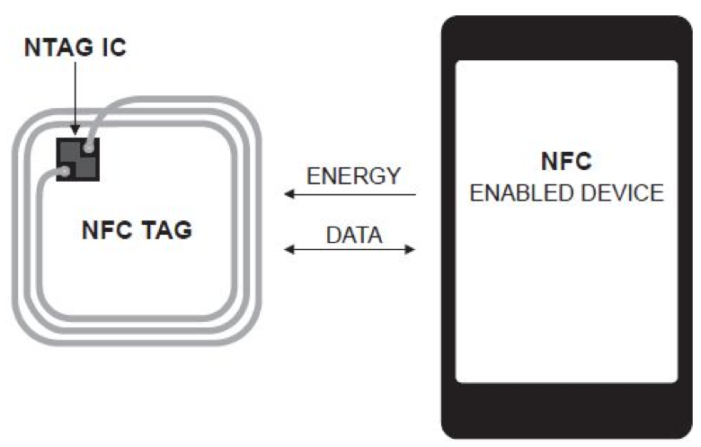
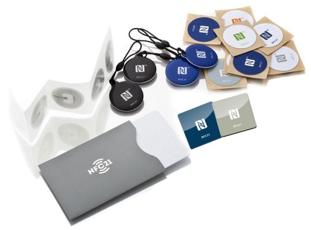
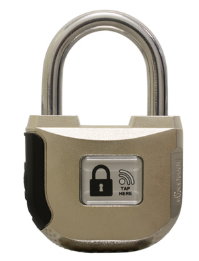
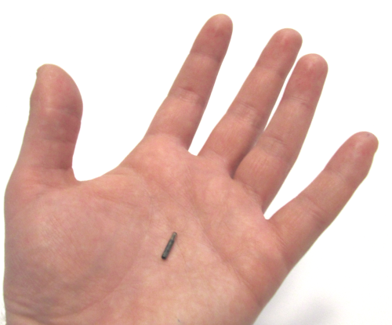

NFC ist eine Technologie zur drahtlosen Datenkommunikation über sehr kurze Distanzen. Die Technologie ist bereits weit verbreitet, viele moderne Smartphones und Tablets unterstützen sie.
NFC (Near Field Communication) ist eine Technologie für die drahtlose Datenkommunikation zwischen zwei Geräten über sehr kurze Distanzen (weniger als 10 cm, typisch bis 4 cm). Die Sende- und Empfangsfrequenz beträgt 13.56 MHz. Daten können mit maximal 424 Kilobit pro Sekunde übertragen werden (das entspricht etwa 30 Textseiten im Format A4 pro Sekunde).

Oft ist eines der beiden Geräte aktiv (z.B. ein Smartphone) und das andere passiv (z.B. ein "NFC-Tag" ohne Batterie). NFC unterstützt aber auch die Datenkommunikation zwischen zwei aktiven Geräten.
Die Datenkommunikation erfolgt in einem der drei folgenden Modi:
Passive NFC-Tags sind Datenspeicher, die beschrieben und gelesen werden können. Die Grösse und Einteilung des Speichers hängt vom Typ des NFC-Tags bzw. der Anwendung ab. Typisch sind Speichergrössen von weniger als 100 Bytes (Zeichen) bis mehrere Tausend Bytes. Ein NFC-Tag kann Inhalte in unterschiedlichen Formaten speichern (z.B. Text, eine Web-Adresse, eine Visitenkarte, usw.). Die Daten in einem NFC-Tag können aber auch Befehle zur Ausführung von Apps auf einem Smartphone oder Tablet sein (z.B. das automatische Einrichten eines WLAN-Zugangs).
NFC-Tags gibt es in unterschiedlichsten Formen und Grössen (z.B. Anhänger, Stickers, usw.).

Sehr aktuell ist das kontaktlose Bezahlen an der Kasse mit einer Debit-/Kreditkarte oder einem Smartphone mit einer entsprechenden App. Karten, mit denen man kontaktlos bezahlen kann, sind mit einem "wireless"-Symbol gekennzeichnet.
Praktisch sind NFC-Tags, in denen Befehle zur automatischen Ausführung von Apps auf einem mobilen Gerät gespeichert sind. Damit können beispielsweise Besucherinnen und Besucher einer öffentlichen Einrichtung (z.B. in einer Bibliothek) automatisch Zugang zu einem passwortgeschützten WLAN erhalten. Es können mit einem einzelnen NFC-Tag auch mehrere Befehle nacheinander ausgeführt werden (siehe beispielsweise Automate Android Phone with NFC for Car Driving Mode
Vielfältig sind Anwendungen, bei denen NFC-Tags zur Identifikation von "Dingen" dienen. Beispielsweise können Objekte in Museen oder Archivalien in Archiven mit NFC-Tags, in denen die zugehörigen Metadaten gespeichert sind, gekenzeichnet werden.
Es gibt auch schon verschiedene mit NFC ausgerüstete Geräte, die meist über eine entsprechende App bedient werden können (z.B. ein NFC-Vorhängeschloss).


Ein Dauerthema sind NFC-Implantate (siehe z.B. https://iamrobot.de). Mit implantierten NFC-Tags lassen sich Türen öffnen oder Eintrittskarten für eine Veranstaltung speichern.
Im Gegensatz zu NFC gibt es mehrere RFID-Standards. Sie unterscheiden sich im genutzten Frequenzbereich für die Datenübertragung (low frequency: 120-150 kHz / high frequency: 13.56 MHz / ultra high frequency: 433 MHz, 860-920 MHz), in der Lese-/Schreibdistanz (bis 20cm / bis 1m / bis 100m) und in der Fähigkeit, gleichzeitig mehrere Tags lesen zu können.
Der RFID-Standard "ultra high frequency" ist mit dem NFC-Standard identisch; d.h. derartige RFID-Tags können mit einem Android-Smartphone gelesen und auch beschrieben werden, falls der RFID-Tag nicht schreibgeschützt ist!